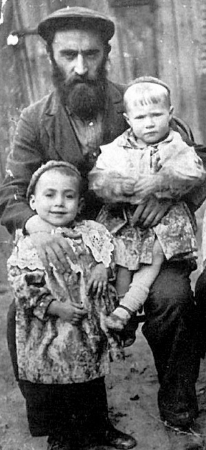

Continuing the Legacy of His Great Father
A biographical sketch of the Chassid, R’ Tzemach Gurevitch, son of the famous shadar, R’ Yitzchok (Itche) Masmid. * Presented to mark his yahrtzait on 18 Tammuz.
IN THE SHADOW OF HIS GREAT FATHER

The young Tzemach was separated from his parents at an early age. Around the year 5677, his father began serving as shadar for the Rebbe Rashab and he traveled from city to city. On 14 Sivan 5679 Tzemach’s mother passed away and he and his brothers were raised in the home of his grandmother Elka, and they would only see their father for brief periods.
His father took him to the Rebbe Rashab for Tishrei 5678. R’ Yehuda Chitrik, who later became his brother-in-law, described that special Rosh HaShana in his memoirs:
“On the first night of Rosh HaShana during the first Maariv in the home of the Rebbe on Pushkinsky Street, the room they davened in, although spacious, as it had room for fifty people if necessary, did not have enough room for all the Chassidim, 300 of them. They stood crowded together with no one able to move from his place. The air was so humid that the Chassidim dripped with sweat and the walls of the house dripped with moisture too.
“In the middle of the day on Rosh HaShana his father went to a corner and was immersed in prayer. Tzemach, left to his own devices, was frightened when he did not see his father and began to cry. Just then, the Rebbe’s son (later to be the Rebbe Rayatz) walked in and when he saw the child crying, asked him what was wrong. The boy said he was looking for his father. ‘What is your father’s name?’ asked the Rebbe’s son. ‘Itche,’ said the boy. ‘Which Itche?’ ‘Itche the melamed.’ ‘He will come right away,’ said the Rebbe’s son soothingly.
“When R’ Itche came, his son told him the brief conversation he had with the Rebbe’s son. R’ Itche asked him, ‘When the Rebbe’s son spoke to you, were you standing or sitting?’ ‘I sat,’ said his son. R’ Itche admonished him, saying, ‘You should have known that you stand up for the Rebbe’s son.’”
During that visit Tzemach had yechidus which he spoke about years later:
I remember how the Rebbe sat on his chair and held the chain of his watch. My father went over and stood opposite the Rebbe, near the desk. I, who was ten, stood further away, near the door. I heard my father present various ideas in Chassidus to the Rebbe and ask for the Rebbe’s approval. Most of the questions were in the format of, “Can we explain this in this way,” or “Can we give an analogy like this.” Most of the time, the Rebbe affirmed the correctness of what he said with a slight movement of his head as he said, “We can say that.” One time, the Rebbe said, “The Alter Rebbe says the opposite.”
Then my father motioned to me to approach the Rebbe to receive a bracha. I was afraid to approach the Rebbe and trembled in fright. I slowly moved closer to the desk and my father complained to the Rebbe about me, “He has no desire to learn.” The Rebbe grasped the chain of his watch which was in his pocket and turned to me and said in a sing-song, “Is that so? It says, ‘For I have given you a good doctrine [i.e. the Torah]!’”
IN TOMCHEI T’MIMIM AS A TALMID AND MENAHEL
In 5677, R’ Eliezer Dvoskin (Chachersker) started Yeshivas Tomchei T’mimim in Charson and Tzemach learned there. R’ Mordechai Perlov was the rosh yeshiva. On 8 Iyar 5680/1920, the yeshiva found out about the passing of the Rebbe Rashab. R’ Eliezer was inconsolable and cried day and night. As a result of the histalkus he decided to disperse the yeshiva. Some talmidim were sent to Rostov, some to Kremenchug, and the rest went home.
Tzemach moved on to the yeshiva in Kremenchug, which was run by R’ Yisroel Noach Blinitzky. This is where the students of the younger divisions had fled from Lubavitch during the war. Tzemach learned there until 5684, at which time some of the talmidim were sent to Charkov, the yeshiva being run by the one who later became the Rebbe Rayatz’s secretary, R’ Yechezkel (Chatshe) Feigin.
In 5690, R’ Yechezkel Himmelstein, along with his helper R’ Tzemach Gurevitch, opened a yeshiva in Charson, but it did not last long. This was the era when yeshivos were shut down by the evil communist regime. R’ Mordechai Shusterman related in his memoirs that when he went to the yeshiva with his friend, R’ Berel Gurevitch (later the menahel of Beis Rivka), they went to the home of R’ Himmelstein where the wife came out crying and said they had all been arrested a few days earlier.
They were later freed until the trial. R’ Tzemach took the opportunity to flee to his home in Charkov, where he went to live with his father who was then living in the slaughterhouse. R’ Tzemach worked in the slaughterhouse. Soon after he became engaged to the daughter of the Chassid, R’ Aharon Tumarkin.
ATTEMPTS TO LEAVE
After the Rebbe Rayatz left Russia in 5688, Tzemach’s father tried to leave Russia in order to be with the Rebbe.
In 5689, thanks to the efforts of a number of Chassidim, R’ Yaakov Yisroel Zuber was able to leave Russia. The Rebbe then told the Chassidim to intensify their efforts in order to enable two of the great Chassidim, R’ Itche der Masmid and R’ Yankel Zuravitzer, to leave Russia. The Rebbe also told these two Chassidim to try and do things in the usual way and to submit a request to the government for permission to emigrate from the country.
At this time R’ Itche asked the Rebbe whether to ask for visas for his young sons, Hillel and Shmuel, too. The Rebbe told him to take them along. Over the course of four years R’ Itche submitted numerous requests and each time he was refused. In Tishrei 5683, R’ Itche went to Malachovka and after Simchas Torah the government informed him he could leave but his family had to stay in Russia.
Among the hardworking activists helping R’ Itche leave was R’ Avrohom Shmuel Levin who lived in Charkov. The two older boys, Tzemach and Eliezer, remained in Russia until a much later point.
THE INFORMANT AND THE ARREST
In Tishrei 5699, an uninvited guest arrived in Charkov, DYG, known by the Chassidim who left Russia as the “known informer.”
He went to the shul where he met a Lubavitcher who wasn’t that bright, and he asked where he could sleep. The Lubavitcher, who didn’t realize who he was dealing with, considered it a privilege to help a graduate of Tomchei T’mimim and took him to Meir Gurkov’s house. On the way the informer managed to extract information about all the Chassidim in the city.
R’ Tzemach, who heard about this, consulted with his brothers-in-law, R’ Chitrik and R’ Shlomo Shimonowitz, and they agreed that they had to move to Georgia immediately. R’ Tzemach had good reason for concern since his activities on behalf of the yeshivos were reason enough to arrest him.
About a month or two after the informer’s visit to the city, on Shabbos before Mincha, police agents went to R’ Tzemach’s house. Agents were simultaneously visiting R’ Meir Gurkov, R’ Shmuel Katzman, R’ Nachum Yitzchok Pinson, R’ Avrohom Boruch Pevsner, and R’ Yehuda Chitrik. DYG had informed on them all.
Although these visits did not end in arrests, the Chassidim were careful not to sleep at home from that day onwards. This was especially so when they found out that the NKVD agents had also visited the neighbors of some of the Chassidim, who happily reported that they were religious Jews who taught their children to be like them.
International Women’s Day fell on Shushan Purim of that year. The Chassidim, sure that on this day, when gentiles drank to oblivion, they would not be visited, slept at home. That night the angels of death went to the homes of all those Chassidim and arrested them.
They sat in jail for over a month. “I couldn’t even dream that they would allow me to ask my family for matza for Pesach,” R’ Tzemach later said to R’ Chitrik, “since they did not even allow us to inform them as to our whereabouts.”
Shimon Katzman, the son of R’ Shmuel, was a soldier in the army at the time, and when he heard about his father’s arrest, he sent letters to all government offices with the demand that they free his father. His father was freed after Pesach, while another four including R’ Tzemach were sent to labor camps. R’ Tzemach was released several years later and was reunited with his family.
THE LUBAVITCHER CHEVRA KADISHA OF SAMARKAND
When the Germans invaded Russia in the summer of 1941, the masses began fleeing from the border cities to the interior of Russia. Jews mainly fled to central Asia. Many Jews, including Lubavitchers, settled in Samarkand and Tashkent. The refugees endured the seven levels of Gehinom on their way to Samarkand.
The Rebbe Rayatz, who was in New York by this time, heard about Anash settling in Samarkand and Tashkent. The postal system was affected due to the war, and although the Rebbe tried to find out how they were, there was hardly any connection between the Chassidim in Samarkand and the Rebbe in Brooklyn. The Rebbe wrote them letters but they did not reach their destination.
We know that the Rebbe knew that R’ Tzemach and his family were in Samarkand, for in a letter that his uncle, R’ Moshe Leib Rodstein wrote to R’ Yisroel Jacobson on Erev Shabbos, Parshas Pinchas 5702, he said:
“I just received a letter from the Holy Land from Leibel Cohen and he reports good news that the sons-in-law of my late brother-in-law R’ Aharon Tumerkin, which include Yehuda Chitrik and his family, Shlomo and his family, and Tzemach’s wife and family, and R’ Abba [Pliskin – a brother-in-law] and his wife, all escaped to Samarkand.”
“In Samarkand we starved,” wrote R’ Nachum Shmaryahu Sasonkin in his memoir. “Thousands of refugees streamed there and the authorities were unable to feed them all. They had a strict quota on bread and each person was given no more than 400 grams of bread a day.”
In addition to malnutrition, due to the lack of basic sanitary conditions, the air became toxic and congested, the odors and stench filled the atmosphere, and masses of people could not bathe and dress properly. The large population, with the addition of thousands of refugees, contributed to the spread of contagious diseases, mainly typhus, which felled many.
Many people became sick and weakened, and could not survive the terrible starvation and died. Every morning, when people went out to the streets, they saw swollen bodies of those who had died of starvation. These bodies were all over the place and people did not bother to bury them. Among them were also those who did not die of starvation but of mild illness which their weakened bodies could not stave off.
The city had a municipal chevra kadisha of the Bucharian Jews, but in light of the terrible situation, with many dying of starvation, it was necessary to form another chevra kadisha.
It was R’ Yehuda Leib Levin who took on this job. He organized a group of fifteen Lubavitchers who took care of all aspects of the many burials; buying land, buying shrouds, collecting wood to cover the body, collecting the bodies (which necessitated going around every day to the city hospitals and asking whether any Jews had died), burial and putting up gravestones. R’ Tzemach and his two brothers, Shmuel and Eliezer, were part of the chevra kadisha. His wife joined the women who took care of the sick by cooking nourishing meals and bringing them to the hospitals.
In 5706, R’ Tzemach was able to leave Russia in the famous escape, with forged papers which stated he was a Polish citizen. He arrived in France and from there he wanted to go to the Rebbe.
A CHASSID IN CUBA
In the summer of 5708/1948 R’ Tzemach went to Cuba. Since he did not have papers allowing him into the United States he remained in Santiago until the end of 5710. He tried leaving Santiago which didn’t have many Jews, but the Rebbe considered it a shlichus. This is what the Rebbe Rayatz wrote on 7 Cheshvan 5709 to R’ Tzemach’s uncle, R’ Moshe Leib Rodstein, who served as his secretary:
“In response to your letter about my friend and student, R’ Tzemach, I do not understand why speed is necessary for him to travel from there and come to this country. Over there, he can work in inyanei Torah and good chinuch. It is surprising that he does not write to me what he has done and arranged until now in matters of chinuch etc.”
The state of Judaism in Cuba was poor to the point that even the rabbi of the k’hilla, Rabbi Meir Rosenbaum, wrote a letter to the Rebbe Rayatz and explained to him how difficult it would be for R’ Tzemach to work there. The Rebbe responded, acknowledging that at first glance it would seem impossible for a person of the stature and character of R’ Tzemach to be effective in such a spiritually desolate environment, but he concludes:
“However, despite all that, it is clear that the coldness that one senses amongst some of our fellow Jews towards matters of holiness is only in their outer behavior, but the inside of each of them is good. The heart of Yisroel is always alert to matters of truth that come from the heart, which is full of love for Hashem, love for Torah, and Ahavas Yisroel.”
On 13 Nissan of that year the Rebbe wrote directly to R’ Tzemach and encouraged him to stay in Cuba despite the difficulties:
“In response to your letter, do not worry about your delay in the place where you are, and you should increase your efforts in your work, and know with certainty that everything you do in matters of fear of heaven, love for Torah and b’nei Torah and Ahavas Yisroel is immeasurable in terms of their amazingly great loftiness. As is known the difference between sowing and planting, that sowing needs to be done again and again while planting, although it takes time until it bears fruits, but they grow year after year. May Hashem strengthen your health and the health of your family and give you success in all your matters.”
It was only after a year in Cuba that the Rebbe told R’ Rodstein, “The time has come to bring Tzemach here.” It took some time until he finally arrived in the US.
As soon as he arrived he became one of the greatest mekusharim to the Rebbe MH”M whose nesius had just begun. Since space is limited, one example to demonstrate his hiskashrus will have to suffice. On Erev Rosh HaShana 5711 the Rebbe stood for about three hours at the Ohel and read panim. It poured the entire time. About ten people were there with the Rebbe, most of them bachurim. The married men there were R’ Chadakov, R’ Shlomo Aharon Kazarnovsky, R’ Mordechai Mentlick and R’ Tzemach.
On Simchas Torah 5711 the Rebbe entered the shul at around two in the morning and saw those who were still dancing and gave them brachos. The Rebbe blessed R’ Tzemach with parnasa.
R’ Tzemach found a job shechting chickens and worked there for twenty years. He passed away on 18 Tammuz 5761 at the age of 94.
D. Levanon. "Continuing the Legacy of His Great Father." Beis Moshiach, no. 884 (June 20, 2013).